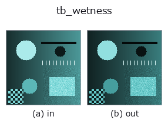

typed op• 数据种类:rgbimage → rgbimage
• 调用:fullseye.apply(img, "tb_wetness", a=0.5, b=0.5)(2-D 的模型是一张图 + 两个标量旋钮 a,b∈[0,1])

*图为在 128×128 合成输入上实际运行的输出。左为输入，右为输出。点云以俯视散点显示(亮度 = z)，一维序列为折线，体数据为沿 z 的最大值投影，视频为中间帧，复数图像为幅值；无法成像的返回值直接显示数值。*
扫描旋钮 a(0.1 / 0.5 / 0.9，另一旋钮取默认):
▸ tb_wetness: knob a sweep (docs site)
扫描旋钮 b(0.1 / 0.5 / 0.9，另一旋钮取默认):
▸ tb_wetness: knob b sweep (docs site)
阶段(前置算子 → 本算子，从左到右):
▸ tb_wetness: stages (docs site)
换别的图像(合成场景 / 照片 / 硬币。上排为输入，下排为对应输出。旋钮取默认):
▸ tb_wetness: other inputs (docs site)
湿润表面的基底色。漫反射变暗（同时镜面反射增加）。
> 以下的详细说明为原文 —— 摘要与标题已翻译。
base_rgb: 乾いた状態の色 (H,W,3) または (3,)。wet: 濡れ具合(0–1)。
ior: 水膜の屈折率。
返り値: 濡れた状態の拡散色(同形)。
なぜ暗くなるか: 水膜の内側で全反射が起き、拡散光が何度も表面へ戻されて
そのたびに吸収される。近似として、乾いた反射率 ρ に対し内部反射率
Ri = 1 − (1 − Ri0)/n² 相当の再吸収を掛ける ―― 濡れた砂が黒く見える現象そのもの
(鏡面が増えるのは clearcoat_shade(coat=wet) を重ねて表す)。
2-D 進化レジストリへ橋渡しした optics の op `wetness。実装は同じで、呼び出し規約だけ op(v, a, b) に合わせてある。a が wet(既定 1)、b が ior`(既定 1.33)を振る。
• 示例数据目录(下载 URL / 许可证) —— 2-D 用 skimage.data(BSD/公有领域)加合成图,3-D 给出真实数据源(Stanford/PDS 等)的下载 URL。
• 算子来历与参考文献 —— 该算子族所依据的研究/方法出处。
下面的程序已确认可以运行(与图相同的输入)。在 Studio 帮助中，此块会变成按钮，可当场加载并运行。
img_to_rgb 0.50 0.50 tb_wetness 0.50 0.50
▸ Load this pipeline · Load & run
下面的示例调用的是底层账本算子 wetness。此桥接算子只是把同一实现适配为 fn(v, a, b) 约定，行为完全相同(只是调用形式不同)。
• machined_metal_and_materials — py -3.11 examples/machined_metal_and_materials.py
rgbimage 作为输入)identity · tb_sensor_capture · tb_specular_diffuse_split · tb_specular_coefficient_map · tb_specular_free_transform · tb_rgb_to_quaternion
typed)tb_points_to_voxel · tb_estimate_point_normals · tb_iss_keypoints · tb_project_points · tb_render_point_depth · tb_statistical_outlier_removal · tb_radius_outlier_removal · tb_voxel_grid_downsample
*Provenance: ops.py — 2D 算子登记表。本条目由 tools/opdocs.py md 自动生成(请勿手工编辑)。*
© 2026 Kazufumi Furuse — Fullseye operator documentation. Licensed under Apache-2.0.
{kind=link}
{kind=link}
{kind=link}
{kind=link}